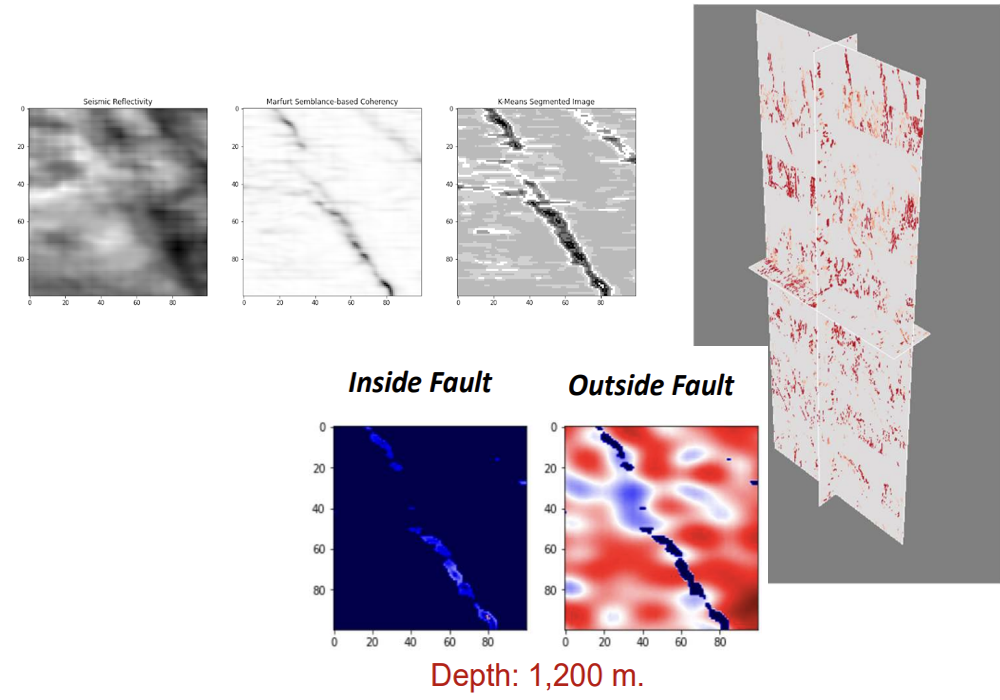
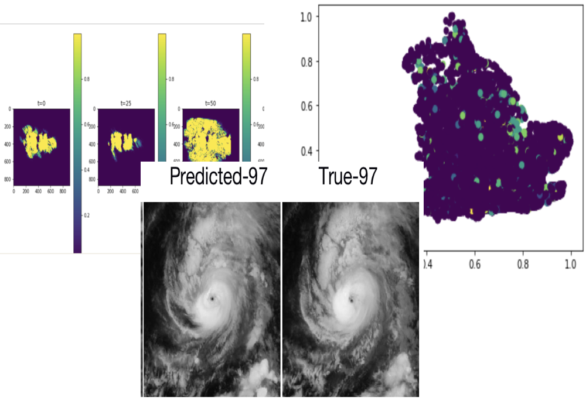

Jonathan Brunton, MSc
#Budding Environmental Data Scientist & Machine Learner
#
5+ years in Pythonic Geospatial Research & Development, 1.5+ professionally
#
Welcome potential employers and environmental data enthusiasts!#
For clean-cut .pdfs of my resume and portfolio, as well as contact details, please visit Supporting Materials

Computer Vision for Subsurface Fluid Storage Evaluation
Master’s capstone project - a machine learning application derived from seismic reflectivity and Full-Waveform Inversion data.

Minor Environmental Data Projects
Wildfires, Hurricanes, Floods, oh my!
Background & Skills
Professional experiences, education, and levels of expertise regarding skills in data and geoscience.
Note
Like this website? Want me to make you one? Contact me at the 'Supporting Materials' link above.